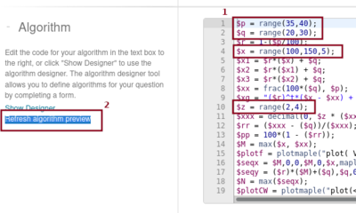
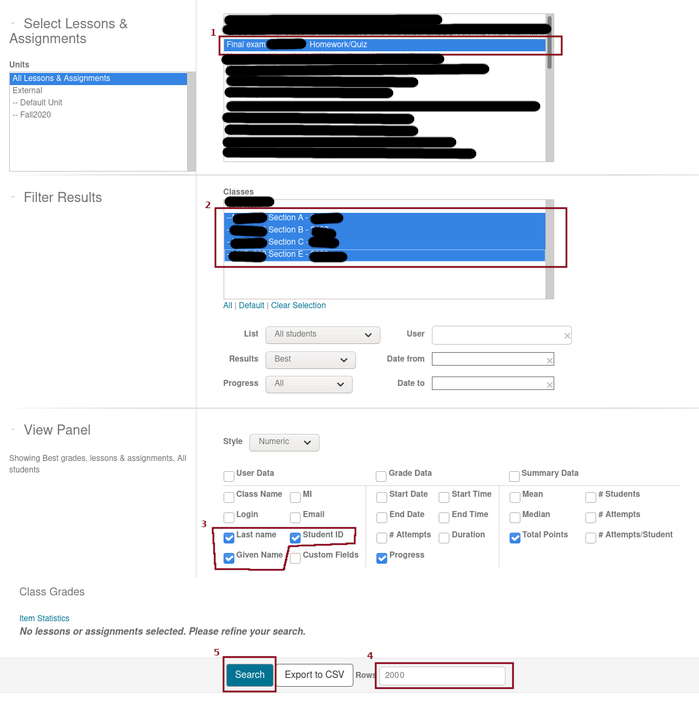
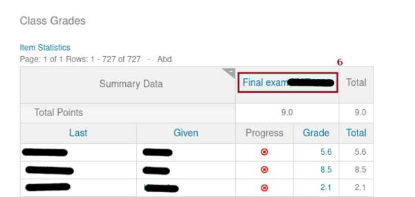
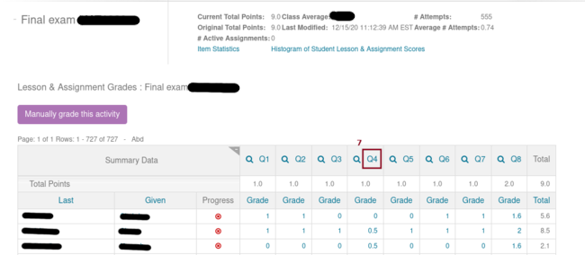
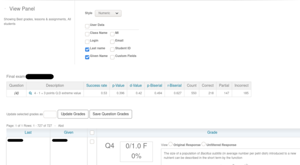
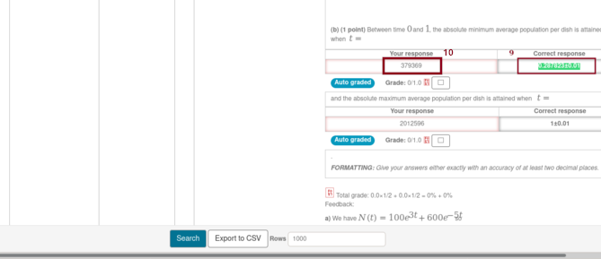

This question comes up if you find that a student has posted (part of) their assignment on the net (some discussion groups, ...) to get some help. Unless the student has also posted some personal information, it first seems that you have no way to find out who was the student.
In the present discussion, we assume that the assignment has several questions and that some of them have a large number of variants provided by their parameters. For the sake of this discussion, suppose that Question 4 has 560 variants, Question 7 has 300 variants, Question 1 has 200 variants, and so on.
The following procedure was suggested by a Technical Support Analyst, Customer Success, DigitalEd.
Start the search of the owner with the question having the largest number of variants, Question 4 in the present context. Looking at the statement of the question, you should be able to find the values of the parameters used to create this question. Go to the question and edit the Algorithm Section of the question by replacing the random variables by the values that you have found on the question that has been posted by the student. If you cannot edit the question because you do not own it, then you can clone it and edit the cloned question.
For instance, in the figure below, the random variables are $p, $q, $x and $z (item 1 in the figure below). Suppose that their values in the posted question are 36, 25, 110 and 3 respectively. Then, we will replace the statements defining these variables by $p = 36;, $q = 25;, $x = 110; and $z = 3; respectively.

Click on Refresh algorithm preview (item 2 in the figure above) to compute the answers(s) for the question. There are many parts in the question shown in the figure above. $x1, ..., $xg are all answers to parts of the question. Write their values down and exit the question. Do not click on save but on cancel. You do not want the destroy the beautiful question that you have created.
Go to the Gradebook for your course on Möbius and select:
Finally click on Search (item 5 in the figure below).

Normally, instructors have only one course to select in item 2 of the figure above; namely, the course that they are teaching. If you have administrator privileges in Möbius and you access the parent class of all the classes that have used the assignment, then you will be able to select all the children of the parent class as was done above.
You get the following display after a long wait (in particular if you have a really large number of students.)

Click on the title of the assignment (item 6 in the figure above) to get, again after a long wait, the following display.

Now, click on the title of the question you are interested in (item 7 in the figure above). It is Question 4 in the present case. Finally, after a long wait, you get the display with Question 4 for all the students.

If it is a large page, then it is preferable to save it to your computer for the next step where you have to search this page. It is generally faster to search this page that way. That is what we do in the next step.
Open the local version of the page with Question 4 for each student and use the browser search function (item 8 in the figure below) to search for the solution of the second part of Question 4. In the present case, 0.287823±0.01. There were only four students who got the question associated to this particular answer for Question 4.

The figure above display the solution (item 10 in the figure above) of one student for the question associated to the answer 0.287823±0.01 (item 9 in the figure above).
You can repeat the procedure above with the second question with the largest number of variants, then the third question with the largest number of variants, ... The intersection of the resulting students lists from each search should further reduce the number of potential students with the specific assignment.
In our sample above, we could already find the student that we were looking for because he was the only one who gave 379369 for the answer (item 9 in the figure above).